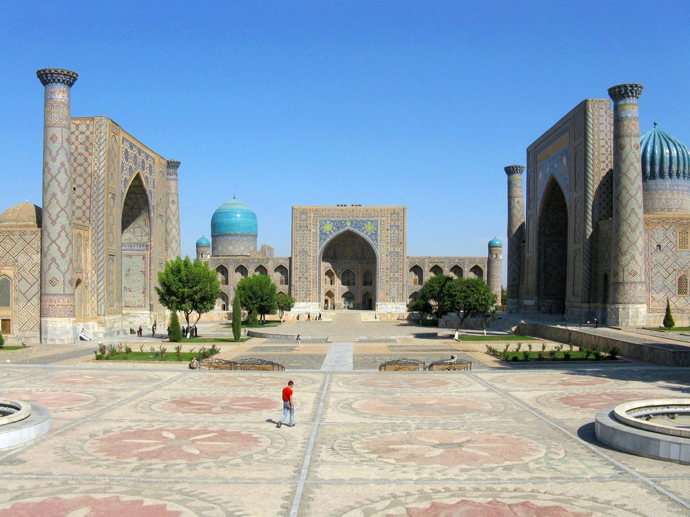

Registon maydoni
Uch madrasa. Bitta ulkan taassurot.
O‘ZBEKISTON / SHAHAR QO‘LLANMASI 01
Manzillarni tanlang. Kuningizni tuzing. Yo‘lga o‘zingizga mos reja bilan chiqing.
Xaritadagi manzilni ochib, hikoyasini o‘qing.
SHARTLI CHIZMA · MASOFA VA JOYLASHUV MASSHTABGA MOS EMAS

TANLANGAN MANZILLAR
Hikoyasini o‘qing. Rejangizga qo‘shing. Har bir bekatga o‘z vaqtingizni ajrating.
Uch madrasa. Bitta ulkan taassurot.
Moviy rangning ming xil ohangi.
Samarqand osmonidagi moviy gumbaz.
SIZNING KUNINGIZ
Manzillarni qo‘shing, tartibini o‘zgartiring va rejangizni matn fayli qilib oling. Shaxsiy ma’lumot yoki ro‘yxatdan o‘tish kerak emas.
Yuqoridagi manzillardan kamida bittasini qo‘shing.
Manzillarni tanlang
Reja shu brauzerda saqlanadi. Bu chipta yoki bron emas.
YO‘LGA CHIQISHDAN OLDIN
Manzillar haqida rasmiy ma’lumotlar Uzbekistan Travel’dan tekshirildi. Joriy narx va ochilish vaqti bu yerda taxmin qilinmaydi.
Rasmiy shahar qo‘llanmasi ↗Tashrif kuni rasmiy sahifa yoki manzil kassasidan tekshiring. Bu saytdagi reja kirish huquqini bermaydi.
Diniy maskanlarda hurmatli kiyim va sokinlik muhim. Joydagi suratga olish va kirish ko‘rsatmalariga rioya qiling.
Qulay oyoq kiyim, suv va ob-havoga mos kiyim oling. Rejadagi vaqtlar taxminiy: dam olish uchun qo‘shimcha vaqt ajrating.